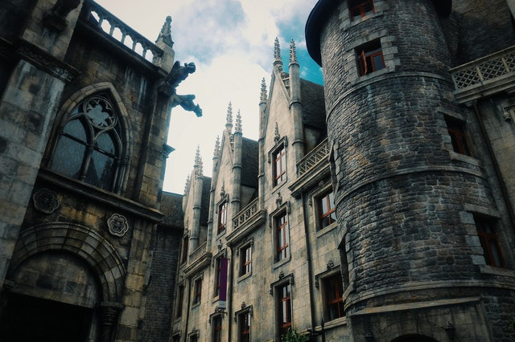

Venha conosco descobrir a verdadeira história sobre a Idade Média e sobre a Igreja Católica!
Página Principal
Saudações caro viajante! Seja muito bem-vindo ao Universo Medieval!

Caso queira saber mais sobre o nosso site, clique aqui.
Caso tenha dúvidas, você pode saná-las aqui.
Para acessar e/ou modificar os dados da sua conta, clique aqui.
Faça o seu login
Antes de você iniciar a sua aventura, você precisa fazer o seu login!
O que você encontra no Universo Medieval?
Aqui você encontra informações sobre os eventos que ocorreram durante a Idade Média, como também acerca da história da Santa Igreja Católica e da sua doutrina em forma de:
Artigos;
Vídeos;
Podcasts;
Livros;
Cursos.
Nós também falamos sobre:
Virtudes
Ordens de Cavalaria
A presença da cultura medieval nas novas formas de entretenimento, como videogames, HQs, filmes, animes, etc.
Vida dos Santos
E muito mais!
Pronto para começar a sua jornada por estas terras, viajante?